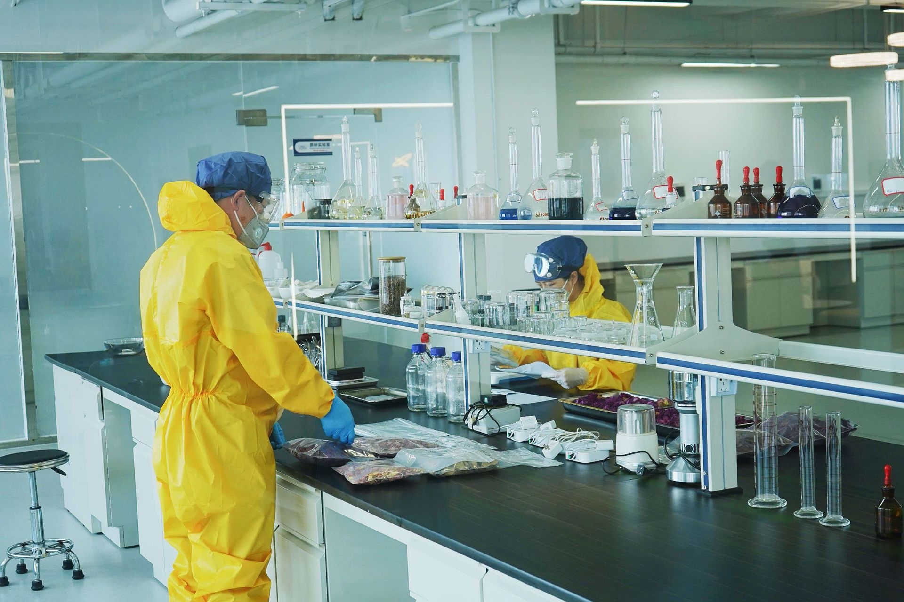
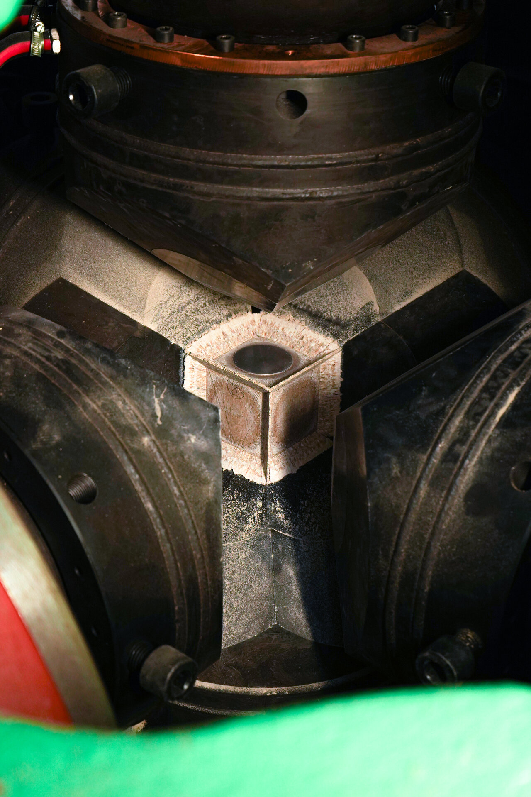
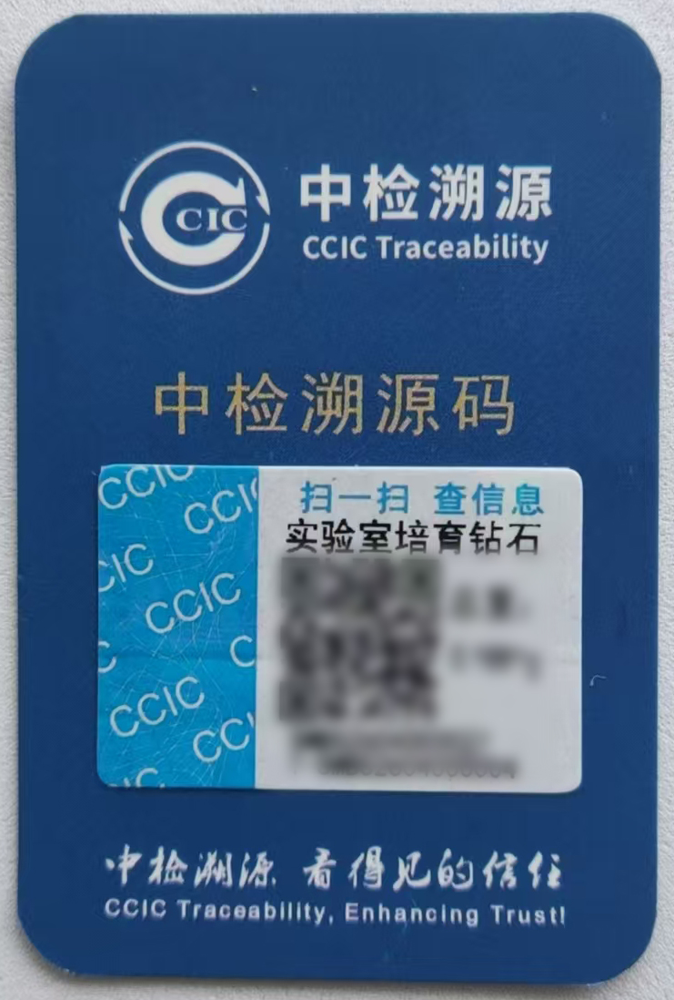

Memorial Diamond Industry Trends: 2026 Market Analysis
In This Guide
- The Memorial Diamond Market in Context
- Growth Drivers: What Is Actually Driving Demand
- Competitive Landscape: A Concentrated but Fragmented Market
- Supply Chain Geography: Where Memorial Diamonds Are Actually Made
- Technology Trends: What Is Changing on the Factory Floor
- Market Risks and Structural Challenges
- What This Means for B2B Partners
- Conclusion
- Related Articles
The memorial diamond industry sits at the intersection of three powerful market forces: the maturation of laboratory-grown diamond technology, the growing demand for personalized memorial products, and the structural shift toward pet-humanization in developed economies. In 2026, these forces have converged to create a market that is small in absolute terms but growing faster than most observers anticipated — and one that is attracting attention from manufacturers, investors, and memorial service providers alike.
This analysis is based on our observations from the factory floor, conversations with distributors across four continents, and the operational data we have accumulated since 2012. We do not claim comprehensive market coverage — the memorial diamond segment is too fragmented and too private for that — but we can offer a view from inside the supply chain that is not available from analyst reports or press releases.

HPHT synthesis array at BioGem Lab, Luoyang. The equipment configuration shown handles concurrent growth runs for multiple partner orders.
The Memorial Diamond Market in Context
Memorial diamonds represent an extremely narrow slice of the broader laboratory-grown diamond market. The global lab-grown diamond industry — which includes gem-quality stones for jewelry, industrial abrasives, and semiconductor substrates — has received considerable attention from market researchers. Grand View Research and Fortune Business Insights have published estimates placing the total synthetic diamond market in the range of $12–15 billion (2022), with projections of growth toward $30 billion by 2030. These figures are useful for context, but they tell us almost nothing about the memorial segment specifically.
Memorial diamonds are different from jewelry-grade lab-grown diamonds in ways that matter commercially. They require carbon sourcing from biological materials (hair, fur, plant fibers), not generic graphite feedstock. They demand a different certification narrative — one that traces a specific individual's carbon through the entire process, rather than a generic "lab-grown" origin story. And they serve a fundamentally different customer need: grief processing and memorialization, not adornment or status signaling.
Because of these differences, memorial diamond manufacturers operate in a separate commercial ecosystem from the large CVD/HPHT producers serving the jewelry market. Companies like BioGem Lab and our competitors do not compete with Lightbox, WD Lab Grown Diamonds, or the Indian and Chinese producers supplying mass-market jewelry. Our competition is other memorial specialists, and our customers are memorial service providers — pet cremation companies, funeral homes, and independent memorial brands — not jewelry retailers.
Growth Drivers: What Is Actually Driving Demand
Pet Humanization and the Pet Memorial Economy
The most significant demand driver we observe is the structural shift in how consumers in North America, Western Europe, and Australia treat companion animals. Pets are increasingly viewed as family members, not property. This is not a new observation, but the economic expression of this shift has matured to the point where it now supports premium memorial products that would have been unthinkable a decade ago.
The pet cremation industry in the United States alone has grown from a fragmented network of local operators into a category with national players and standardized service offerings. We have observed that memorial diamond partnerships are most successful when integrated into this existing cremation service infrastructure — not sold as standalone products. A pet owner who has already chosen private cremation and is receiving an urn is far more receptive to a memorial diamond offering than a cold prospect encountering the concept for the first time.
The geographic concentration is notable. Our partner network — and the partner networks of our competitors — is heavily weighted toward English-speaking markets: the United States, Canada, the United Kingdom, Australia, and New Zealand. This is not because of manufacturing capability limitations (we ship globally) but because of the cultural conditions that make memorial diamonds comprehensible and desirable. Markets with strong pet cremation traditions and disposable income levels above a certain threshold are the addressable market. Expansion beyond this core requires cultural adaptation, not just translation.
Laboratory-Grown Diamond Normalization
The second major driver is the normalization of lab-grown diamonds in consumer consciousness. Five years ago, explaining to a customer that a diamond could be grown in a laboratory required significant education. Today, the concept is widely understood, if not universally accepted. The jewelry industry's aggressive promotion of lab-grown diamonds as an ethical and affordable alternative to mined stones has done the educational heavy lifting for the memorial segment.
This normalization has a subtle but important effect on the memorial diamond business: it reduces the skepticism barrier. A consumer who already accepts that diamonds can be grown in a lab is more likely to accept that their pet's fur can be transformed into one. The memorial diamond industry has benefited, perhaps disproportionately, from the marketing expenditures of the much larger jewelry-grade lab-grown sector.
Regulatory Pressure on Ash-Based Memorial Products
A third driver that receives less attention but matters significantly is the evolving regulatory environment around cremated remains. Several jurisdictions have tightened restrictions on the transport, handling, and commercial use of human and pet ashes. The European Union's regulatory framework for post-cremation products has become more complex, and individual U.S. states have varying requirements that complicate interstate commerce in ash-derived memorial products.
This regulatory pressure has created an opening for hair-based and fur-based memorial diamonds. Hair and fur are not classified as human remains in most jurisdictions, do not require the same documentation chain as ashes, and can be transported internationally with minimal regulatory friction. For manufacturers with the carbon extraction capability to work with hair and fur — which not all competitors possess — this represents a structural advantage that will likely increase over time.

Pet hair sample weighing during carbon extraction preparation. Hair and fur samples bypass the regulatory complexity associated with cremated remains.
Competitive Landscape: A Concentrated but Fragmented Market
The memorial diamond manufacturing sector is concentrated at the top and fragmented below. A small number of established players — Eterneva (United States), LONITÉ (Switzerland), Heart In Diamond (international), and ourselves — account for the majority of production capacity and brand recognition. Below this tier, dozens of smaller operators serve local or niche markets, often with limited technical capability and inconsistent quality control.
What is notable about the competitive structure is the divergence in business models. Eterneva operates a direct-to-consumer model with a strong brand and premium pricing, positioning memorial diamonds as luxury experiences rather than manufacturing outputs. LONITÉ has built a European-focused operation with emphasis on certification and process transparency. Heart In Diamond operates a network model with regional production partners.
BioGem Lab's position is deliberately different. We are a pure B2B manufacturer. We do not sell to end consumers. We do not operate a retail brand. Our customers are the service providers — pet cremation companies, funeral homes, memorial brands — who need reliable manufacturing capacity, consistent quality, and white-label capability. This positioning is not better or worse than the DTC model; it is simply different, serving a different segment of the value chain.
The "Fast Delivery" Arms Race
One competitive dynamic worth watching is the pressure on production timelines. The standard memorial diamond production cycle — from carbon sample receipt to finished stone — has historically been in the 4-to-10-month range, depending on the manufacturer and the complexity of the order. Some operators have managed to compress this to the 2-to-3-month range through process optimization and capacity investment.
This compression matters because memorial diamonds are sold in a context where timing is emotionally sensitive. A customer who has just lost a pet is not in a position to wait eight months for a product they ordered. The operators who can deliver reliably in shorter timeframes have a significant advantage in partner acquisition and retention — provided they do not sacrifice quality to achieve speed.
At BioGem Lab, our standard production cycle is approximately 60 days for diamond synthesis, with an additional 30 days for finished jewelry. This is not achieved through process shortcuts but through dedicated production capacity, parallel processing of purification and growth preparation stages, and a manufacturing infrastructure purpose-built for memorial diamond production rather than adapted from general lab-grown diamond operations.
Supply Chain Geography: Where Memorial Diamonds Are Actually Made
The geography of memorial diamond manufacturing does not match the geography of memorial diamond consumption. The vast majority of memorial diamonds sold in North America, Europe, and Australia are manufactured in Asia — specifically in China, with smaller production capacity in India and Russia. This is not a matter of cost arbitrage alone; it reflects the concentration of HPHT synthesis expertise, the availability of specialized equipment, and the accumulated technical knowledge in carbon purification that is required for biological-source diamond production.
This geographic mismatch creates operational complexity that many downstream partners underestimate. Carbon samples — hair, fur, plant fibers — must be transported internationally, crossing customs boundaries, subject to varying biosecurity regulations, and exposed to the delays and risks of international shipping. The manufacturers who have invested in robust logistics infrastructure — sample collection kit design, documentation packages for customs clearance, insurance protocols, and tracking systems — operate at a significant advantage over those who treat shipping as an afterthought.
For U.S. and European partners evaluating memorial diamond suppliers, the relevant question is not "where is the laboratory located?" but "what is the end-to-end reliability of the supply chain from my customer's sample collection to the finished stone in my customer's hand?" A laboratory in Luoyang with a proven logistics protocol is more reliable than a laboratory in Austin with no international shipping experience. The physical location of the synthesis equipment matters far less than the operational maturity of the end-to-end process.

HPHT synthesis chamber interior. The equipment and expertise required for biological-source diamond production are concentrated in a small number of specialized facilities globally.
Technology Trends: What Is Changing on the Factory Floor
HPHT vs. CVD in Memorial Applications
The broader lab-grown diamond industry is experiencing a shift from HPHT (High-Pressure High-Temperature) toward CVD (Chemical Vapor Deposition) for jewelry-grade production, driven by CVD's advantages in larger crystal sizes and lower energy costs at scale. In the memorial segment, however, HPHT remains the dominant and arguably superior technology.
The reason is fundamental to how memorial diamonds are made. HPHT synthesis requires a carbon source that can be compressed and heated in the presence of a metal catalyst. The carbon extracted from biological materials — after purification and graphitization — is well-suited to this process. CVD, by contrast, requires a carbon-containing gas (typically methane) to be decomposed in a plasma environment. Converting biological carbon into a suitable CVD feedstock gas is technically possible but adds complexity, cost, and potential contamination risks that outweigh CVD's advantages for this application.
For the foreseeable future, memorial diamond manufacturing will remain an HPHT-dominated field. Partners evaluating suppliers should be cautious of manufacturers who claim CVD-based memorial diamond production without transparent explanation of how biological carbon is converted to CVD-compatible feedstock. The technology choice matters less than the manufacturer's demonstrated capability to produce consistent, high-quality results from biological carbon sources.
Carbon Purification: The Hidden Differentiator
The most technically demanding step in memorial diamond production is not the synthesis itself but the carbon purification that precedes it. Biological materials — hair, fur, plant fibers — contain significant quantities of non-carbon elements: sulfur from keratin, nitrogen from amino acids, trace metals from environmental exposure, and organic contaminants from shampoos, dyes, or pesticides. Achieving the 99.95%+ carbon purity required for gem-quality diamond synthesis is a non-trivial chemical engineering problem.
The purification protocols used by different manufacturers vary significantly in sophistication and yield. Some operators use basic combustion methods that result in lower purity and higher defect rates in the final diamond. Others — including BioGem Lab — have developed proprietary multi-stage purification processes that achieve the required purity while preserving sufficient carbon mass from the original sample. Our carbon extraction technology is protected under Chinese National Invention Patent ZL 201010565778.9, reflecting the technical investment required to solve this problem reliably.
For B2B partners, the practical implication is that not all memorial diamond suppliers are equivalent in their underlying technical capability. A supplier with robust purification technology will deliver more consistent color, clarity, and carat weight outcomes than one without. The difference may not be visible in marketing materials but becomes apparent in production yield, remake rates, and customer satisfaction over time.
Traceability and Digital Documentation
A technology trend that is accelerating across the memorial diamond sector is the demand for comprehensive production documentation and traceability. End customers — particularly in the pet memorial segment — want to know that "their" diamond was actually made from "their" pet's fur. This is not a paranoid concern; it is a reasonable expectation when purchasing a product whose entire value proposition is based on personal carbon transformation.
The response from leading manufacturers has been to invest in digital traceability systems. At BioGem Lab, every sample receives a unique identifier at receipt, and every production stage — weighing, purification, graphitization, growth, cutting, grading — is documented with photographs, time stamps, and operator signatures. This documentation is compiled into a digital traceability report accessible via QR code, which partners can share with their end customers.
The trend toward traceability is likely to intensify. As the market matures, customers will become more sophisticated and less willing to accept opaque production processes. Manufacturers who cannot provide verifiable documentation will face competitive pressure from those who can. For B2B partners, choosing a supplier with robust traceability infrastructure is a hedge against future customer skepticism and potential regulatory requirements.
Market Risks and Structural Challenges
No market analysis is complete without acknowledging the risks. The memorial diamond industry faces several structural challenges that could constrain growth or reshape competitive dynamics.
Price Pressure from Jewelry-Grade Lab-Grown Diamonds
The most significant external risk is the declining price of generic lab-grown diamonds. As jewelry-grade production scales up — particularly in India and China — wholesale prices for standard lab-grown diamonds have fallen dramatically. This creates a reference price anchor that can make memorial diamonds seem expensive by comparison, even though the products serve entirely different purposes and have entirely different cost structures.
The memorial diamond industry has not yet found an effective way to decouple its pricing narrative from the jewelry-grade market. When a customer sees that a 1-carat lab-grown diamond ring costs $800 at a retail jeweler, a $2,000+ memorial diamond from their pet's fur can seem inexplicably expensive — unless the value proposition is communicated with sufficient clarity to overcome the price anchor.
This is fundamentally a B2B marketing challenge, not a manufacturing challenge. The manufacturers who will thrive are those whose partners — pet cremation services, funeral homes, memorial brands — are equipped to explain the difference between a commodity lab-grown diamond and a personalized memorial diamond created from a specific biological source. The product is not the diamond; the product is the transformation.
Regulatory Uncertainty
The second major risk is regulatory. The memorial diamond industry operates in a gray zone in many jurisdictions. Is a memorial diamond a jewelry product, a funeral product, or something else? Does it fall under consumer protection regulations, biosecurity protocols, or customs classification rules that were written without memorial diamonds in mind? The answer varies by country and, in federal systems like the United States, by state.
As the market grows, it will attract regulatory attention. We anticipate that within the next three to five years, one or more major jurisdictions will introduce specific regulations for memorial diamond products — likely focused on carbon source verification, production documentation requirements, or consumer disclosure standards. Manufacturers with established quality management systems and traceability infrastructure will be better positioned to adapt to these regulations than those operating informally.
Consumer Education Burden
The final structural challenge is the consumer education burden. Memorial diamonds are not an impulse purchase, nor are they a product that most consumers know exists before they encounter it. Every sale requires explanation: what the product is, how it is made, why it costs what it costs, and what the customer will receive. This education burden falls primarily on the B2B partners — the pet cremation services and funeral homes — who must integrate memorial diamond offerings into their existing service conversations.
Manufacturers who invest in partner education and sales support — training materials, FAQ documentation, customer-facing brochures, and staff training programs — will achieve higher conversion rates than those who simply ship diamonds and expect partners to figure out the selling. This is an area where we have observed significant variation in manufacturer investment, with direct consequences for partner success rates.
What This Means for B2B Partners
For pet cremation services, funeral homes, and memorial brands evaluating memorial diamond partnerships in 2026, the market analysis suggests several practical conclusions:
First, the demand environment is favorable and likely to remain so. The pet humanization trend shows no signs of reversal, and the normalization of lab-grown diamonds continues to reduce consumer skepticism. The addressable market is expanding, not contracting.
Second, supplier selection matters more than price. The technical and operational differences between memorial diamond manufacturers are substantial and have direct consequences for product quality, delivery reliability, and customer satisfaction. A partnership with a technically capable manufacturer at a modestly higher unit price will typically outperform a partnership with a low-cost, low-capability supplier when measured by customer retention and reputation impact.
Third, the supply chain geography is a feature, not a bug, but only if the manufacturer has invested in logistics maturity. International sample shipping and finished diamond delivery are non-trivial operations. Partners should evaluate manufacturers on their end-to-end process reliability, not on their marketing claims.
Fourth, traceability and documentation are becoming competitive necessities, not nice-to-have features. End customers will increasingly expect verifiable production records. Partners who work with manufacturers that cannot provide this documentation will find themselves at a disadvantage.
Finally, the memorial diamond industry is still young. The competitive landscape will shift. New entrants will appear, some incumbents will fail, and regulatory frameworks will evolve. Partners who build relationships with manufacturers that have sustainable business models, technical depth, and operational maturity will be better positioned to navigate these changes than those who chase the lowest unit price or the most aggressive marketing.

Digital traceability documentation with unique sample identifier and production stage records. This level of documentation is becoming a competitive necessity in the memorial diamond market.
Conclusion
The memorial diamond industry in 2026 is a small but growing market with favorable demand drivers, a concentrated competitive landscape, and significant operational complexity that creates barriers to entry. The manufacturers who will succeed are those that combine technical capability in carbon purification and HPHT synthesis with operational maturity in international logistics, quality control, and partner support.
For BioGem Lab, this analysis confirms the strategic choices we have made since 2012: focus on B2B manufacturing rather than direct-to-consumer retail; invest in proprietary carbon extraction technology; build end-to-end logistics capability for international sample and product movement; and provide comprehensive partner support rather than simply shipping diamonds. These choices position us to serve the market as it grows and matures, not merely to capture current demand.
The market is not without risks — price pressure from jewelry-grade lab-grown diamonds, regulatory uncertainty, and the consumer education burden are real constraints on growth. But the fundamental demand driver — the human desire to memorialize loved ones, including companion animals, in tangible, lasting form — is durable. The memorial diamond industry is not a fad. It is a permanent addition to the memorial product landscape, and its evolution will be worth watching closely in the years ahead.
Memorial Diamond Manufacturing Partnership
White-label HPHT memorial diamond production for pet cremation services and memorial brands. Patent-backed carbon extraction. ~60-day standard turnaround.
Related Articles
Wholesale Pricing Guide
How pet cremation services, funeral homes, and jewelry retailers price memorial diamonds for B2B partners.
White-Label Guide
Complete guide to launching a white-label memorial diamond program without manufacturing investment.
Cross-Selling Strategy
How funeral homes and pet cremation services can integrate memorial diamonds into existing service offerings.
Frequently Asked Questions
How are memorial diamonds made from hair?
The process involves five stages: sample collection and weighing, carbon extraction through multi-stage purification, graphitization to convert the carbon into a crystalline form suitable for synthesis, HPHT growth in a high-pressure chamber at approximately 1,500°C and 5.5 GPa, and final cutting and grading according to gemological standards. Each stage is documented with photographs and time stamps for traceability.
Are memorial diamonds real diamonds?
Yes. Memorial diamonds are chemically, physically, and optically identical to natural diamonds. Both are crystalline carbon with the same hardness (10 on the Mohs scale), refractive index, and thermal conductivity. The only difference is the origin of the carbon — biological carbon from hair or fur, rather than geological carbon from the earth's mantle. Learn more about our HPHT synthesis process.
How long does it take to make a memorial diamond?
At BioGem Lab, the standard production cycle is approximately 60 days for diamond synthesis, with an additional 30 days for finished jewelry setting. Total timeline from sample receipt to delivery is typically 90 days. This is significantly faster than the industry average of 4–10 months, achieved through dedicated production capacity and parallel processing of purification and growth preparation.
What carat sizes are available for memorial diamonds?
Our standard production line focuses on four carat sizes: 0.50ct, 1.00ct (primary SKU, recommended), 1.50ct, and 2.00ct. We do not produce 0.5ct or 0.30ct memorial diamonds. Our experience shows that 1.00ct provides the optimal balance of visual presence, production stability, and customer satisfaction for memorial applications. Color options include G-H (standard) and F-G (premium, limited availability); clarity options include VS (standard) and VVS (premium).
How much hair or fur is needed for a memorial diamond?
The minimum submission is approximately 6 grams of hair or fur for most sizes, with 10–20 grams recommended as a safety margin. Pet hair can be collected gradually over several months — store it in a dry, airtight container away from moisture, sunlight, and heat. For botanical sources like flowers, approximately 10–15 grams of dried or preserved material is recommended. Hair collected over time and stored properly retains its carbon structure without degradation.
Can hair be collected gradually over time?
Yes. Many pet owners prefer to collect hair gradually, especially for senior pets or those with medical conditions where grooming is frequent. The key is proper storage: use a dry, airtight container (zip-lock bag or small glass jar), keep it away from moisture and direct sunlight, and label each collection with the date and pet name to maintain traceability. Once you reach the minimum 6 grams, the sample can be submitted for processing.
What determines the color of a memorial diamond?
Diamond color is determined by HPHT growth conditions, not by the type of hair or fur submitted. Nitrogen content in the purified carbon and growth chamber parameters control whether the resulting diamond is colorless to near-colorless (E–H). Natural variability exists — we control the process precisely, but each stone is unique. We do not guarantee exact color grades; we guarantee the carbon origin and the quality of the growth process.
How large is the memorial diamond market?
There are no reliable publicly available figures for the memorial diamond segment specifically. It is an extremely small subset of the broader laboratory-grown diamond market. What we can observe is that demand is growing, the number of active manufacturers is limited, and the addressable market — English-speaking developed economies with strong pet cremation traditions — is expanding.
Why are most memorial diamonds manufactured in Asia?
HPHT synthesis expertise, specialized equipment availability, and accumulated technical knowledge in biological carbon purification are concentrated in Asia — particularly China. This is not simply a cost issue; the technical capabilities required for memorial diamond production from biological sources are specialized and not widely distributed.
Is the memorial diamond market competitive?
The market is concentrated at the top — a small number of established manufacturers account for most production — but fragmented below, with many small operators serving local or niche markets. The competitive differentiation is primarily technical capability, operational reliability, and partner support quality, not price.
What is the biggest risk to memorial diamond demand?
The most significant external risk is price pressure from declining jewelry-grade lab-grown diamond prices, which create an unfavorable price anchor for consumers unfamiliar with the technical differences between commodity lab-grown diamonds and personalized memorial diamonds. The industry's challenge is to communicate value clearly enough to overcome this anchor.
BioGem Lab operates under Chinese National Invention Patent No. ZL 201010565778.9 (Certificate No. 1058820), covering bio-carbon extraction and purification technology for memorial diamond synthesis.